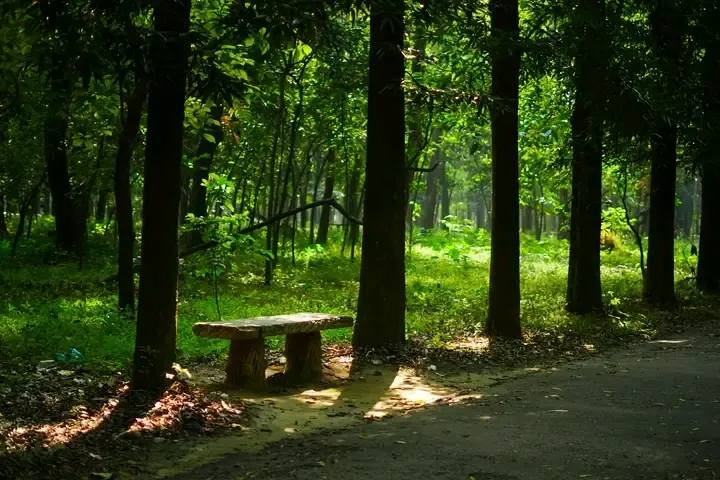
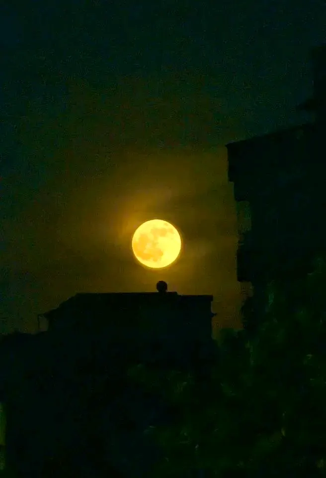

Faces in Motion
Everyday expressions
People. Places. Everything in between.
I'm Zulkar. A little about the people, places, and experiences that shape my story.
Explore my storyI enjoy bringing ideas to life and meeting people along the way.
I’m a BBA student at East West University, and campus life is a big part of my journey, especially through the East West University Creative Marketing Club (EWUCMC). I’ve worked with seniors, friends, and teams on event leadership, campaign planning, and content development.
Outside university, I travel to explore unfamiliar places and fresh perspectives.
Behind every event are small decisions, conversations, and shared responsibilities. I’ve contributed to event activities, coordinated with teams, and helped shape campaigns and content. Each experience has taught me something about people, communication, and working toward a common goal.
Five short films. One collection.
Everyday expressions
Conversations and moments
Small stories from university
Places and perspectives
An evening of live music
A change of scenery, a new perspective.

The little details are worth noticing.
Travel helps me see things differently.

AFTER DARK / 01A few frames I wanted to keep.
More people to meet. More places to see.